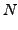
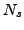
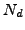
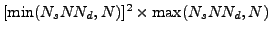
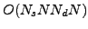
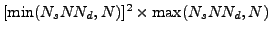
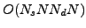

We consider the inverse medium problem for the time-harmonic wave equation with broadband and multi-point illumination in the low frequency regime. Such a problem finds many applications in geosciences (e.g. ground penetrating radar), non-destructive evaluation (acoustics), and medicine (optical tomography). We use an integral-equation (Lippmann-Schwinger) formulation, which we discretize using a quadrature method. We consider only small perturbations (Born approximation). To solve this inverse problem, we use a least-squares formulation. We present a new fast algorithm for the efficient solution of this particular least-squares problem.
If  is the number of excitation frequencies,  the
number of different source locations for the point illuminations,
 the number of detectors, and  the parametrization for the
scatterer, a dense singular value decomposition for the overall
input-output map will have
 cost. We have developed a fast
SVD-based preconditioner that brings the cost down to
 thus, providing orders of magnitude improvements over a black-box
dense SVD and an unpreconditioned linear iterative solver.
the parametrization for the
scatterer, a dense singular value decomposition for the overall
input-output map will have
 cost. We have developed a fast
SVD-based preconditioner that brings the cost down to
 thus, providing orders of magnitude improvements over a black-box
dense SVD and an unpreconditioned linear iterative solver.